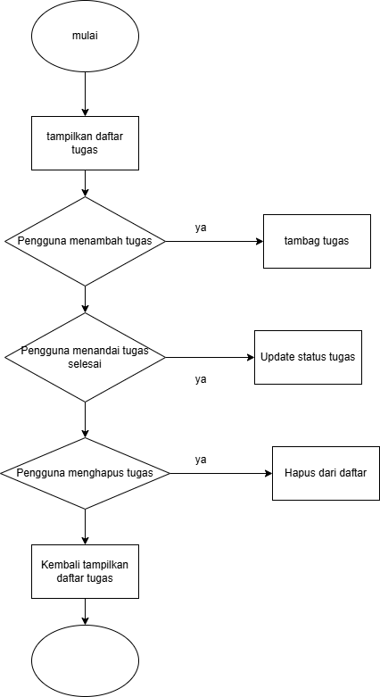
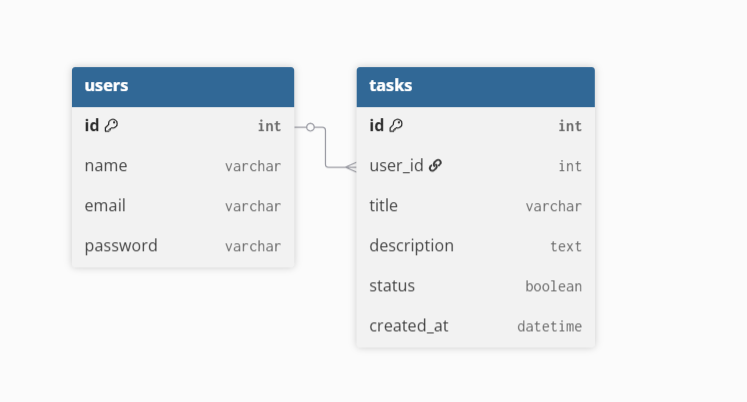
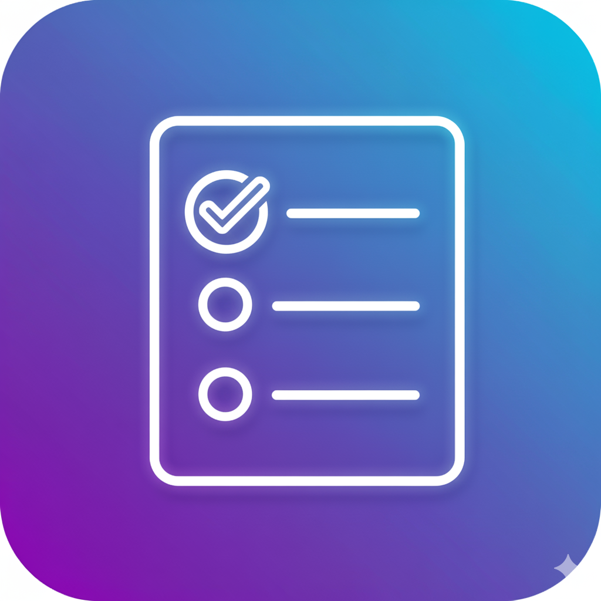

Kelola aktivitas harianmu dengan mudah dan efisien
Aplikasi To Do List membantu pengguna dalam mencatat dan mengatur aktivitas sehari-hari. Pengguna dapat menambah, menandai, dan menghapus tugas dengan mudah.



HTML, CSS, JavaScript